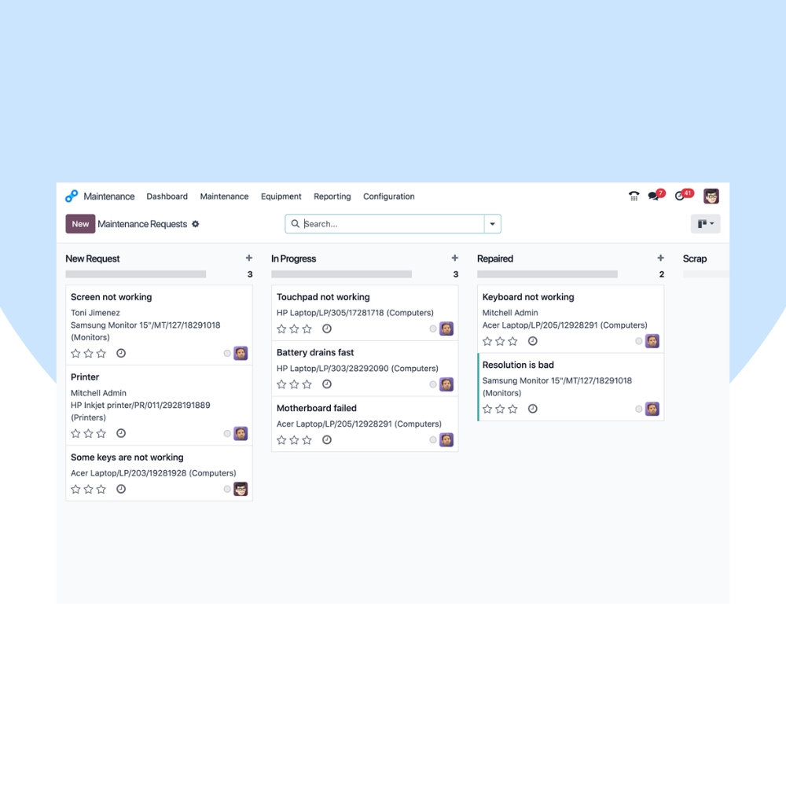
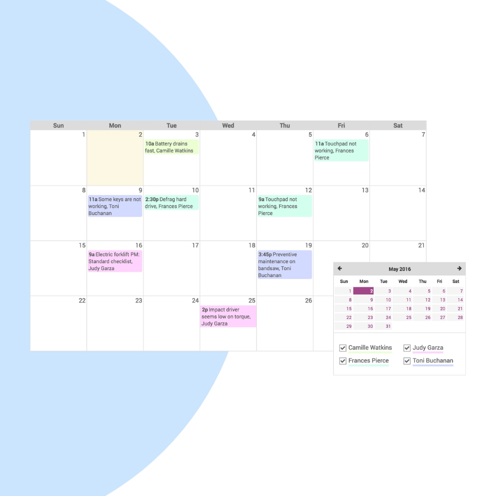
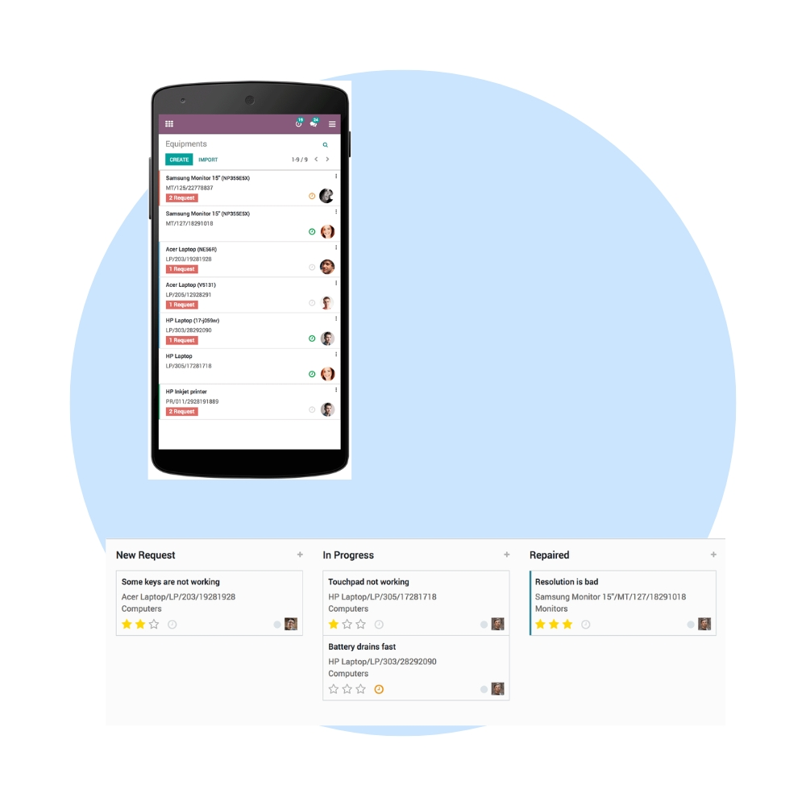

Reduce downtime and extend asset life with Odoo Maintenance. We help businesses plan preventive maintenance, manage corrective tasks, and track equipment performance in real time across factories, warehouses, and facilities.
We configure Odoo Maintenance to match your asset structure, maintenance strategy, and operational priorities. Integrate maintenance seamlessly with Manufacturing, Inventory, Purchase, and Quality modules.


Our implementation ensures proactive maintenance, faster issue resolution, and complete visibility into asset health and maintenance costs.
Schedule maintenance before breakdowns occur.
Log and resolve breakdowns quickly.
Maintain complete history of equipment.
Improve reliability and production continuity.
Monitor MTBF, MTTR, and maintenance costs.
Connected with Manufacturing & Inventory.
We help you continuously improve maintenance performance, reduce downtime, and increase asset reliability through ongoing optimization.
